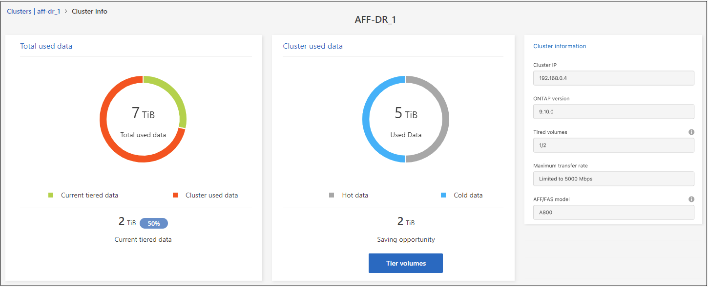
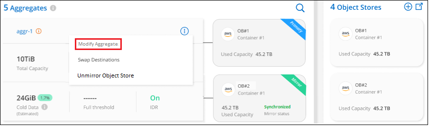

入门
入门
管理集群的数据层
 建议更改
建议更改
现在，您已从内部 ONTAP 集群设置了数据分层，您可以对其他卷中的数据进行分层，更改卷的分层策略，发现其他集群等。
查看集群的分层信息
您可能希望查看云层中的数据量以及磁盘上的数据量。或者，您可能希望查看集群磁盘上的热数据量和冷数据量。XP Bluetiering可为每个集群提供此信息。
-
从左侧导航菜单中、选择*移动性>分层*。
-
在“群集”页面中，单击菜单图标
 并选择*Cluster info*。
并选择*Cluster info*。
-
查看有关集群的详细信息。
以下是一个示例：

请注意、Cloud Volumes ONTAP系统的显示有所不同。虽然Cloud Volumes ONTAP卷可以将数据分层到云、但它们不使用BlueXP分层服务。 "了解如何将非活动数据从Cloud Volumes ONTAP系统分层到低成本对象存储"。
您也可以 "从Digital Advisor查看集群的分层信息" 如果您熟悉此 NetApp 产品，只需从左侧导航窗格中选择*云建议*即可。

对其他卷中的数据进行分层
可以随时为其他卷设置数据分层，例如，在创建新卷之后。

|
您无需配置对象存储，因为在最初为集群设置分层时已对其进行配置。ONTAP 会将任何其他卷中的非活动数据分层到同一对象存储。 |
-
从左侧导航菜单中、选择*移动性>分层*。
-
在*集群*页面中、单击集群的*分层卷*。

-
在 Tier Volumes 页面上，选择要为其配置分层的卷，然后启动分层策略页面：
-
要选择所有卷，请选中标题行（
 ），然后单击 * 配置卷 * 。
），然后单击 * 配置卷 * 。 -
要选择多个卷，请选中每个卷对应的框（
 ），然后单击 * 配置卷 * 。
），然后单击 * 配置卷 * 。 -
要选择单个卷，请单击行（或
 图标）。
图标）。
-
-
在 Tiering Policy 对话框中，选择一个分层策略，也可以调整选定卷的散热天数，然后单击 * 应用 * 。

选定卷开始将其数据分层到云。
更改卷的分层策略
更改卷的分层策略会更改 ONTAP 将冷数据分层到对象存储的方式。更改从更改策略开始。它只会更改卷的后续分层行为，不会追溯性地将数据移动到云层。
-
从左侧导航菜单中、选择*移动性>分层*。
-
在*集群*页面中、单击集群的*分层卷*。
-
单击卷对应的行，选择分层策略，也可以调整散热天数，然后单击 * 应用 * 。
-
注： * 如果您看到用于 " 检索分层数据 " 的选项，请参见 将数据从云层迁移回性能层 了解详细信息。
-
分层策略将发生更改，数据将开始根据新策略进行分层。
更改可用于将非活动数据上传到对象存储的网络带宽
为集群激活BlueXP分层时、默认情况下、ONTAP可以使用无限的带宽量将工作环境中的卷中的非活动数据传输到对象存储。如果您发现分层流量正在影响正常用户工作负载、则可以限制传输期间使用的网络带宽量。您可以选择一个介于1到10、000 Mbps之间的值作为最大传输速率。
-
从左侧导航菜单中、选择*移动性>分层*。
-
在“群集”页面中，单击菜单图标
并选择*最大传输速率*。
-
在_maximum Transfer rate_页面中，选择*Limited*单选按钮并输入可使用的最大带宽，或者选择*Unlimited 表示没有限制。然后单击*Apply。

此设置不会影响分配给正在进行数据层的任何其他集群的带宽。
下载卷的分层报告
您可以下载"层卷"页面的报告、以便查看所管理集群上所有卷的分层状态。只需单击 按钮。BlueXP分层会生成一个.CSV文件、您可以根据需要查看该文件并将其发送给其他组。CSV文件最多包含10、000行数据。

将数据从云层迁移回性能层
从云访问的分层数据可能会 " 重新加热 " 并移回性能层。但是，如果要主动将数据从云层提升到性能层，可以在 Tiering Policy 对话框中执行此操作。使用 ONTAP 9.8 及更高版本时，可以使用此功能。
如果您要停止对卷使用分层，或者决定将所有用户数据保留在性能层上，而将 Snapshot 副本保留在云层上，则可以执行此操作。
有两个选项：
| 选项 | Description | 对分层策略的影响 |
|---|---|---|
恢复所有数据 |
检索在云中分层的所有卷数据和 Snapshot 副本，并将其提升到性能层。 |
分层策略已更改为 " 无策略 " 。 |
返回活动文件系统 |
仅检索云中分层的活动文件系统数据并将其提升到性能层（ Snapshot 副本仍保留在云中）。 |
分层策略更改为 " 冷快照 " 。 |

|
云提供商可能会根据从云端传输的数据量向您收取费用。 |
确保性能层中有足够的空间容纳要从云移回的所有数据。
-
从左侧导航菜单中、选择*移动性>分层*。
-
在*集群*页面中、单击集群的*分层卷*。
-
单击
图标，选择要使用的检索选项，然后单击 * 应用 * 。
分层策略将更改，分层数据将开始迁移回性能层。根据云中的数据量，传输过程可能需要一些时间。
管理聚合上的分层设置
内部 ONTAP 系统中的每个聚合都有两个可调整的设置：分层填充度阈值以及是否已启用非活动数据报告。
- 分层填充度阈值
-
将阈值设置为较低的数字可减少分层之前需要存储在性能层上的数据量。对于活动数据很少的大型聚合，此功能可能很有用。
如果将阈值设置为更高的数字，则会增加分层之前需要存储在性能层上的数据量。这对于仅在聚合接近最大容量时才分层的解决方案可能很有用。
- 非活动数据报告
-
非活动数据报告（ IDR ）使用 31 天的冷却期来确定哪些数据被视为非活动数据。分层的冷数据量取决于在卷上设置的分层策略。此数量可能与 IDR 使用 31 天冷却期检测到的冷数据量不同。
最好保持 IDR 处于启用状态，因为它有助于识别非活动数据和节省空间的机会。如果在聚合上启用了数据分层，则 IDR 必须保持启用状态。
-
在*集群*页面中、单击选定集群的*高级设置*。

-
在高级设置页面中、单击聚合的菜单图标、然后选择*修改聚合*。

-
在显示的对话框中、修改填充度阈值并选择是启用还是禁用非活动数据报告。

-
单击 * 应用 * 。
修复运行状况
可能会发生故障。这样、BlueXP分层操作会在集群信息板上显示"失败"的运行状况状态。运行状况反映了ONTAP 系统和BlueXP的状态。
-
确定运行状况为 "Failed" 的任何集群。
-
将鼠标悬停在信息"i"图标上可查看故障原因。
-
更正问题描述：
-
验证 ONTAP 集群是否正常运行，以及它是否与对象存储提供程序建立了入站和出站连接。
-
验证BlueXP是否已与BlueXP分层服务、对象存储以及它发现的ONTAP 集群建立出站连接。
-
从BlueXP分层发现其他集群
您可以从Tiering _Cluster_页面将未发现的内部ONTAP 集群添加到BlueXP、以便为集群启用分层。
请注意、Tiering _on-Prem dashboard_页面上也会显示一些按钮、用于发现其他集群。
-
在BlueXP分层中、单击*集群*选项卡。
-
要查看任何未发现的集群、请单击*显示未发现的集群*。

如果您的NSS凭据保存在BlueXP中、则您帐户中的集群将显示在列表中。
如果您的NSS凭据未保存在BlueXP中、则系统会首先提示您添加凭据、然后才能看到未发现的集群。

-
对于要通过BlueXP管理并实施数据分层的集群、请单击*发现集群*。
-
在_Cluster Details_页面中、输入管理员用户帐户的密码、然后单击*发现*。
请注意，集群管理 IP 地址会根据您的 NSS 帐户中的信息进行填充。
-
在_Details & Credentials_页面中、集群名称将添加为工作环境名称、因此只需单击*执行*即可。
BlueXP会发现集群、并使用集群名称作为工作环境名称将其添加到Canvas中的工作环境中。
您可以在右侧面板中为此集群启用分层服务或其他服务。
在所有BlueXP连接器中搜索集群
如果使用多个连接器管理环境中的所有存储、则要实施分层的某些集群可能位于另一个连接器中。如果您不确定是哪个Connector管理某个集群、可以使用BlueXP分层跨所有连接器进行搜索。
-
在BlueXP分层菜单栏中、单击操作菜单并选择*在所有连接器中搜索集群*。

-
在显示的搜索对话框中，输入群集的名称，然后单击*Search*。
如果BlueXP层能够找到集群、则会显示连接器的名称。